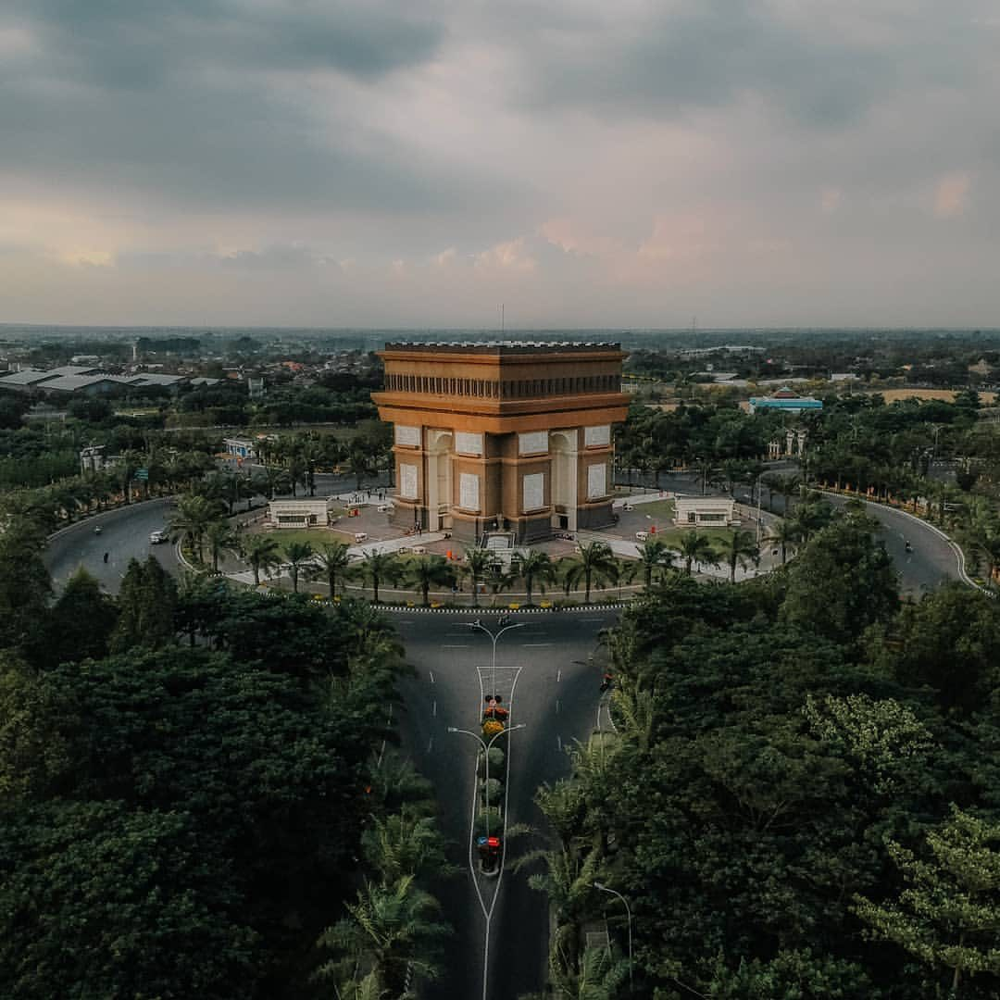

Monumen Simpang Lima Gumul
Banyak orang menyebutnya "SLG" dan banyak juga yang mengatakannya mirip dengan bangunan yang ada
di Perancis. Memang hampir mirip, tetapi terdapat relief disekeliling monumen yang menggambarkan
tentang kehidupan masyarakat Kediri, seperti bercocok tani, gotong royong, dll. Terletak di Desa
Tugurejo, Kecamanatan Ngasem, Kabupaten Kediri

Air Terjun Dolo
wisata air terjun yang terletak di Dusun Besuki, Desa Jugo, Kecamatan Mojo, Kabupaten Kediri. Air
terjun ini berada di bagian timur lereng Gunung Wilis (2.850 meter), yang memiliki ketinggian
125 meter dan 1800 meter di atas permukaan laut (dpl). Debit air yang dicurahakan air terjun ini
tidak terlalu deras, tetapi memiliki suhu air yang sangat dingin. Air terjun Dolo terletak di
kawasan pegunungan, sehingga selain
suhu udaranya dingin, sering kali kawasan di sekitar air terjun dan akses jalan menuju ke sana
tertutup oleh kabut.

Gunung Kelud
Gunung Kelud adalah salah satu gunung berapi yang masih aktif sampai saat ini. Letusan
terakhirnya tahun 2014 mampu menghantarkan abu vulkaniknya sampai Jawa Barat. Orang sini
menganggap sebagai salah satu tempat sakral, disisi lain tempat ini menyimpan keindahan luar
biasa. Berlokasi di antara perbatasan Kediri dan Blitar, wisata ini cukup murah untuk dinikmati.

Kedung Kalkon
"Kedung Kali Konto" atau Kedung Kali Banyu Biru. Tempatnya masih asri dan alami, jauh dari
pemukiman. Kedung Kalkon memiliki keindahan alam yang menawan berupa sungai berwarna biru yang
terletak diantara bebatuan sedimen yang begitu eksotis, dan tentunya sangat memanjakan mata.
Suasananya tenang, teduh, sejuk serta airnya jernih. Lokasinya berada di Dusun Pandean,
Kandangan, Kab Kediri.